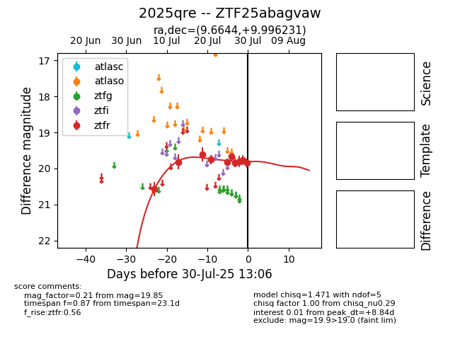

Target 2025qre at 2025-07-30 13:06, see:
FINK: fink-portal.org/2025qre
Lasair: lasair-ztf.lsst.ac.uk/objects/2025qre
ALeRCE: alerce.online/object/2025qre
TNS: wis-tns.org/object/2025qre
YSE: ziggy.ucolick.org/yse/transient_detail/2025qre
alt names
ZTF25abagvaw (ztf,fink)
2025qre (tns,yse)
coordinates:
equatorial (ra, dec) = (9.6644,+9.99623)
galactic (l, b) = (117.7295,-52.74637)
photometry
last ztfr=19.85
10 ztfr detections
